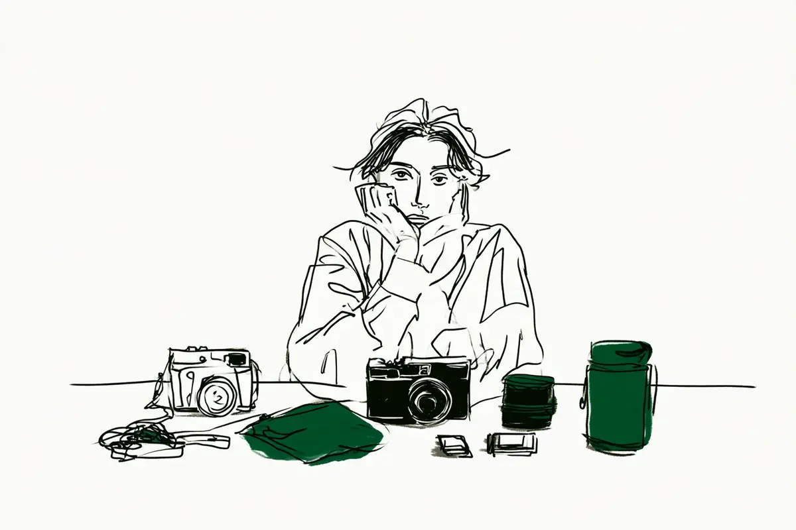

この記事には広告(アフィリエイトリンク)が含まれます。
現在地: 買ったけど使えてない
カメラアクセサリーは初心者に必要?いらなかった声も品目別に

一眼(レンズを交換できるカメラ)を買ったあとの小物で、いらなかった声が見つからなかったのは、SDカードの予備・インナーケース・レンズ用ブロアーの3つでした。保護フィルター・液晶保護・予備バッテリー・防湿庫・三脚の5つは、買ってよかった声といらなかった声の両方に割れました。ストラップとバッグは、要るかどうかより、どれを選ぶかの話でした。検索で上に出る記事は何を買うかのリストが中心なので、ここでは同じ品目の要らなかった声と、分かれた条件を並べます。
私はカメラを持っていないので、掲示板・知恵袋・note・個人ブログで、アクセサリーについて自分のことを書いた49人の声を読みました。そのうち21人は購入リンクか広告の表記のあるサイトの書き手で、特に買ってよかった側はほとんどがそうです。この記事にも楽天のリンクがあり、置いたのは保護フィルター・ドライボックス・ストラップの3節で、どの節にもいらなかった側の声を並べました。
まだ何も買っていない人向けの話は、最初に全部そろえた人、そろえなかった人にあります。
アクセサリー9品目の早見表: いる・いらないの声
| 品目 | よかった声にあった場面 | いらなかった声にあった理由 |
|---|---|---|
| SDカードの予備 | 急なエラー、入れ忘れ | 要らない声なし、速い規格は不要 |
| インナーケース | 出し入れが楽 | 見つからず、全員が商品紹介あり |
| レンズ用ブロアー | 各バッグに常備 | 見つからず、書いた本人は1人 |
| 保護フィルター | 手すりにぶつけた、船の上 | 長年役立たず、余計な物を挟まない |
| 液晶保護 | 傷をつけた後、固定モニター | 見えにくい、ぶつけない |
| 予備バッテリー | 減りの早い機種、電池切れ | こまめに切る、本体で充電 |
| 防湿庫・ドライボックス | 乾燥剤の交換が面倒 | 大きい、密閉箱で足りた |
| 三脚 | 安い物で不便なし、モノ撮り | 大きくて持ち出さず、スナップ中心 |
| ストラップ | 手首: ブラブラ感がない | 冬に手が冷える、使わない |
| カメラバッグ | 見えないバッグで増えた | 荷物が入らず億劫 |
分け方は私の読み方で、1人分の声のセルも多いので、人数ではなく条件の一覧として見てください。
買う前に、自分に聞く5つ
読んだ声の中で、要る・要らないを分けていた条件です。私のすすめではなく、声の中にあった条件だけを質問にしました。
- 電源をこまめに切る? はい→予備が1個で足りた人/いいえ→減りの早い機種で必須だった人(予備バッテリー)
- 寒い場所で撮る? はい→手が冷えてネックストラップに戻した人(ストラップ)/いいえ→関係しません
- モニターは裏返せる? はい→それほど必要に感じない回答/いいえ→むき出しなのでガラス製を付けた回答(液晶保護)
- 置き場所に湿気がこもる? 機材は多い? はい→ドライボックスから防湿庫へ移った人/いいえ→防湿庫をやめた人(防湿庫)
- 普段から持ち歩く? はい→普通のカバンとポーチへ移った人/いいえ→撮影の日にカメラバッグを使う人(バッグ)
三脚は目的が先にあるか、保護フィルターは逆光や夜をよく撮るか、も分かれ目です。
最初に全部そろえた人、そろえなかった人(試し買いのその後)
2013年の知恵袋に、ミラーレス(センサーが見た映像を画面でのぞくタイプのカメラ)を買う前に11品目のリストを作った質問者がいます(その質問)。足りないと思った物を少しずつ、という回答を読み、まずはあれこれ買わずに最低限から集めたい、と方針を変えました。2021年の価格.comには、多くの人がすすめる保護フィルター・液晶保護・予備バッテリー・レンズペンを全部持っていない回答者がいます(その回答)。用品はしばらく使ってみて必要を感じたら買えばいい、が助言です。
逆に、違う視点から撮れるかもと考えてちょくちょく試し買いをする人もいます。2025年の知恵袋の回答者で、それで使い物になる物のほうが少ない、と(その回答)。
SDカードの予備は必要? 要らないという声は見つからなかった
SDカードそのものは、一般論の記事でも本体・レンズ・SDカードの3つが先だ、とされています(Irohasblogの記事)。予備を要らないと書いた人は、読んだ範囲にいませんでした。木工房のスタッフブログに、水族館で突然カードの読み取りエラーが出た人がいます。会社のサイトですが、中身は個人の趣味の体験です。
もう1枚の方も容量がギリギリだったようで、すぐに撮れなくなってしまいました…確認不足…！
予備があっても、空き容量を見ていなかった例です。いちさん(商品の紹介もしているサイトです)は、撮影地で電源を入れたらカードがない、を何度かやった人で、対策はカードケースでした(いちさんのnote)。速さについては、速いSDXCカードに替えても体感は変わらなかった、という人が1人います(KuroBoxさんの記事)。
インナーケースの声: いらなかった側は見つからなかった
インナーケース(普通のカバンの中に入れる、クッション入りの仕切り)について書いた人は4人読みましたが、4人とも商品の紹介もしているサイトの書き手でした。いらなかった声は、その範囲では見つかっていません。記憶と記録の書き手(インナーケースの紹介もしているサイトです)は、それまで布で包んで普通のカバンに入れていた人です。
実際使ってみて、インナーソフトボックスは便利ですね。
カバンからの出し入れが楽になった、と続きます。専用品でなくても、巾着ポーチに入れてカバンに放り込む形に落ち着いた人もいます(バッグの節)。
レンズ用ブロアーは必要? 書いた本人は1人だった
ブロアー(握って空気を吹き出すゴムの道具)は、レンズの表面にも、カメラの中のセンサー(光を受け止める板。言葉の意味)の掃除にも出てきます。レンズ用として自分の使い方を書いた人は、読んだ範囲ではアキさん(商品の紹介もしているサイトです)1人でした。サイズの違うブロアーを各バッグに常備しているそうです(アキさんの記事)。
センサーの掃除は別の話です。ニコンのZfの説明書は、ニコンのサービス機関に頼むことをすすめ、自分でする場合はブラシの付いていないブロアーを、と書いています(Zfの説明書)。2017年の価格.comの相談には、大事な撮影の前日に軽くブロアーをかける人と、ゴミ取りは一切しない人の両方がいました(その相談)。KuroBoxさんは10点入りのクリーニングセットについて、ずっと使わない物もありそうだ、と(KuroBoxさんの記事)。
レンズ保護フィルターは必要? 守られた人と、外した人
保護フィルター(レンズの前にねじ込む無色透明の板)は、声が両側に割れた品目です。価格.comには2018年と2022年に、付ける・付けないを話し合う相談があり、どちらも撮影歴の長い人が中心でした。ふくすさん(カメラ用品の紹介もしているサイトです)は、何がよくて何が要らなかったかを品目ごとに書いた人です。
私自身、動物園の手すりにぶつかった際にレンズフィルターにあたり、レンズ本体が守られた経験があります。
2018年の相談の書き出しは、後悔する場面に遭ったことがない、でしたが、見事に遭遇してフィルターを割った、と返した人がいます(その返信)。塩水のかかる船の上で使う人は、フィルターを使い始める前にレンズを船の金具にぶつけて傷つけたそうです。2022年の相談には、付けていて夜間の撮影では外す人もいました(その返信)。
付けない・やめた側は、私の分け方では多めでした(分け方で順位は変わります)。2018年の相談には、長年撮ってきて保護に役立ったことはほとんどなく、せいぜい子どもの指を防いだ程度、という人がいます。ここ数年付けていないが困ったことはない、という人と、付けない派だと短く書く人も。別の効果を持つフィルターと付け替えるのが面倒だから付けていない、と手間を理由にした人もいました。2022年の相談には、長く使ったうえでやめた人がいます。
長年保護フィルターを使用していましたが、今は使用しなくなりました。
助けられた場面も多々あったと書いたうえで、過去最高額のレンズを買い、間に余計なものを挟みたくなくなったのがやめた理由です。今はキャップをすぐ付ける運用だそうです。同じ相談には、逆光でゴースト(強い光が画面に丸く写り込む現象)が出やすいレンズに替えて付けなくなった人もいます。神戸ファインダーのAkiさん(カメラ用品の紹介もしているサイトです)は、一部の高級レンズを除いて付けずに丁寧に使う人です(神戸ファインダーの記事)。レンズフード(レンズの先に付ける筒)と保険で対応する、個人的な考えだそうです。
付けている人の理由は、レンズの前に物が当たる場面があることでした。外す人の理由は、写りと、付け替えの手間と、高いレンズに余計な物を挟みたくないこと。代わりの手として、フードとキャップが出てきました。カメラ好きの読者が対象のデジカメWatchの2024年の投票では、つける派1564・つけない派328で、こちらは付ける側が多数です(投票のページ)。母集団が違う、体験談とは別の数字です。付けるべきかどうかについてのメーカーの見解は、今回は見つけられませんでした。パナソニックの講座にあるのは種類の説明で、保護用にはMC(無色透明のコーティング付き)やUV(紫外線を切る)が使われる、と(パナソニックの講座)。フードは必須アイテムだ、とも。迷うなら、使って不便を感じてからでも遅くなかった、という声が上の節にあります。付ける場合は、レンズの前の直径(フィルター径)がレンズごとに違います。下のリンクは「レンズ 保護フィルター」で楽天市場を検索するので、自分のレンズの径の数字を足して絞り込めます。
PR(広告)レンズ保護フィルター楽天市場の検索結果へ楽天市場で値段を見る液晶保護フィルムは必要? 傷をつけた後に貼った人、見えにくくて剥がした人
背面モニターに貼るフィルムやガラスです。2021年の知恵袋には、以前にモニターに小さい傷をつけて悲しかったので、新しいカメラには貼っている、という回答があります(その回答)。ベストアンサーの回答者は、固定やチルト(上下に傾けるだけの形)のモニターはむき出しなので、ガラス製を付けている人です。バリアングル(横に開いて裏返せる形)なら、それほど必要には感じない、という前置きつきでした。同じ質問に、こう答えた人もいます。
硬い物にぶつけなければ傷つかないので、ぶつけないように使っているので要りません。
2007年の価格.comの同じ相談では、貼ると見えにくい派と、貼ってて良かった派がほぼ半々でした(2007年の相談)。コンパクトカメラの話で、今のモニターとは事情が違います。Akiさんは、傷で見にくくなった経験がないので必要性が分からない、と個人的な意見として書いています(神戸ファインダーの記事)。
貼る人の理由は、傷をつけた経験と、モニターの形でした。貼らない人の理由は、見えにくさと、ぶつけない使い方です。モニターが裏返せる形かどうかは、自分の機種を見ればすぐ分かります。液晶保護についてのメーカー公式の記述は、今回の材料にはありませんでした。
予備バッテリーは必要? 同じ人が、機種で逆になった
KuroBoxさんは、4台のカメラで買った用品を1つずつ振り返った人です。
α7IIはバッテリーの減りが早いので、予備バッテリーの購入は必須です。
ところが次の機種では持ちが大幅に改善され、迷って買った予備をまったく使わなかった、と続きます。同じ人の中で、機種によって答えが逆になった例です。散歩中に電池が切れたハタモトさん(商品の紹介もしているサイトです)は、いつも2個持ち歩いていたので乗り切れました(ハタモトさんのnote)。
要らなかった側では、ふくすさんが持っていない人でした。
私は頻繁に電源のオンオフを行うため、バッテリーの消費が少なく、正直必要ありませんでした。
数日の旅行程度なら1つで足りる、というのがこの方の経験です。No.54さん(商品の紹介もしているサイトです)の機種は本体で充電できたので、予備の出番は多くありませんでした(No.54さんのnote)。互換バッテリー(メーカー純正ではない他社製)が1年ほどで膨らんで純正にしたそうですが、互換を否定してはいない、とも。
分かれ目は、機種の持ち、電源の切り方、本体で充電できるか、1日か数日か、寒いか、の5つでした。型番は機種ごとに違うので、純正か互換かも含めて、自分の機種の説明書で確かめる範囲だと思います。ニコンのD850の説明書は、充電した予備を用意し、低温では保温した予備と交互に、と案内しています(D850の説明書)。キヤノンのシンガポールのサポートサイト(英語)も、使う直前にポケットで温めると復活することがある、と(キヤノンのページ)。
キヤノンのシンガポールのサポートサイト(英語)は、純正アクセサリーの使用をすすめ、非純正品による不具合は保証の対象外だとしています。日本での扱いは、自分の機種の保証書と説明書で。
防湿庫はいらない? 機材の量と、部屋の湿気で分かれた
防湿庫(電気で湿度を下げてカビを防ぐ保管庫)と、ドライボックス(乾燥剤を入れて使う密閉の箱)です。ひまつぶし広場のつくねさん(防湿庫の紹介もしているサイトです)は、ドライボックスから防湿庫へ移った人です。
僕も最初はドライボックス派でしたが、機材が増えてきたタイミングで防湿庫に乗り換えました。
乾燥剤の入れ替えが要らない点が一番ありがたかった、結論は人による、と本人が書いています。ふくすさんも、吸湿剤の交換の手間を理由に防湿庫の側でした。
逆に、防湿庫をやめた人・買って後悔した人が2人います。KuroBoxさんは60Lの防湿庫を買い、カメラの防湿庫なんていらなかった、と振り返った人です(KuroBoxさんの記事)。とにかく邪魔で大きく、キッチン用の密閉ボックスと電子式の除湿剤と性能の差が見いだせなかった、と。
実は・・・私は自分のカメラやレンズを保管するのに防湿庫もドライボックスも使っていません。
ゆうさんは以前に防湿庫を使い、コンセントが要ること・大きさ・頻繁に使うことを理由にやめた人です。持ち出さないレンズが増えた時期にはドライボックスを使い、風通しのいい部屋へ引っ越してからは何も使っていません。
ドライボックスは3人です。使って防湿庫へ移ったつくねさん、使い始めて今はやめたゆうさん、キッチン用の密閉箱と除湿剤で代わりにしたKuroBoxさん。短所は、乾燥剤の交換の手間(つくねさん・ふくすさん)でした。メーカーの説明も分かれます。ソニーのコンパクトカメラ向けのページは、しっかり保管なら防湿庫(ドライボックスと表記)、手軽になら簡易ドライボックスと乾燥材です(ソニーの保管のページ)。ニコンは湿気を吸った乾燥剤は交換を、タムロンは逆効果だ、と(D850の説明書、タムロンのページ)。防湿庫を買うように、と書いたメーカーは読んだ範囲にありませんでした。迷うなら、使って不便を感じてからでも遅くなかった、という声が上の節にあります。下のリンクは「カメラ ドライボックス」で楽天市場を検索します。入れる機材の量と、乾燥剤を替える手間(上の声)で、選ぶ大きさが変わります。
PR(広告)カメラ用のドライボックス楽天市場の検索結果へ楽天市場で値段を見る三脚はいらない? 安い物で足りた人と、大きすぎて持ち出さなくなった人
Canvaと写真の書き手(カメラ用品の紹介もしているサイトです)は、5000円以下の三脚で不便はない人です(Canvaと写真の記事)。studio popologの書き手(三脚の紹介もしているサイトです)は、大きめの三脚を買って後悔しました。
旅先で家族と一緒に歩くには大きくて重すぎて、気が付けば持ち出さなくなっていました。
後悔したのは三脚そのものではなく選び方だ、とあり、モノ撮り(小物を机の上などで撮ること)やマクロ(小さいものを大きく写すこと)の目的は果たせたそうです。手ブレ補正(揺れを打ち消す仕組み。言葉の意味)が強いので、スナップ(日常の中で気負わず撮る写真)中心なら要らないかも、と書いた人もいます(ふくすログの記事)。一般論の記事にも、重い三脚は持ち出さなくなることがある、という指摘がありました(Irohasblogの記事)。分かれ目は、目的が先にあるかと、持ち出す場面に合う大きさか、の2つです。三脚が効く場面・効かない場面は、暗いところで撮れない…室内・夜にブレる・ザラザラになる原因と対策に図で書きました。
ストラップはどれ? 首掛けか手首か、冬の手はどうするか
ネックストラップ(首から下げるひも)とハンドストラップ(手首や手の甲に通す短いひも)は、要らない品目というより、どちらが合うかの話でした。デジかめんの書き手(ストラップの紹介もしているサイトです)は、別のハンドストラップから乗り換えた人です。
ネックストラップの「ブラブラ感」が苦手だった私には、ハンドストラップの快適さがかなり刺さりました
ふくすさんは首掛け用と手首用の2種類を使い分けています。asianmobileの書き手(商品の紹介もしているサイトです)は、800円の物がずれるので別の物に替えました(asianmobileの記事)。手首で持つ形は続けています。
ハンドストラップが合わなかった側では、古着と写真日記の書き手(商品の紹介もしているサイトです)が、ネックに戻した人でした。
理由はしょうもないですが、寒かったからです。
冬に持ち歩くと、カメラを持っている方の手をポケットに入れられない、というのが理由です。2022年の知恵袋には、レンズ交換は両手が楽なのでハンドは使ったことがない、という回答と、ストラップ自体を使わない回答もあります(その回答)。カメラ好きの読者が対象のデジカメWatchの2023年の投票では、ネック936・ハンド113・リスト108で、首掛けが多数です(投票のページ)。母集団が違う、体験談とは別の数字です。
ハンドをよかったと書いた人は、読んだ範囲では全員が商品の紹介もしているサイトの書き手でした。替えて持ち出す回数が増えたかまで書いた人は、一眼レフが重くて使わなくなった…の材料にもいません。メーカー公式にあるのは、摩耗の点検と、取り付けを間違えると落下のおそれがある、の2点です(キヤノンの記事、X-T3の説明書)。ストラップを替えるのは、付属のネックストラップで不便を感じた人の話で、ハンドには冬の手・レンズ交換・安い物がずれる、という短所も出ています。下のリンクは「カメラ ストラップ」で楽天市場を検索します。
PR(広告)カメラのストラップ楽天市場の検索結果へ楽天市場で値段を見るカメラバッグはどれ? 専用バッグで増えた人、普通のカバンに移った人
KuroBoxさんが一番買ってよかったと感じた用品は、カメラバッグに見えないカメラバッグでした。飲食店などにも持ち歩ける、という理由です(KuroBoxさんの記事)。Gadget NyaaのYotchanさん(商品の紹介もしているサイトです)は向きが逆です(Yotchanさんの記事)。カメラバッグに約5万円使ったあと、1年半で巾着ポーチに入れてカバンに放り込む形に落ち着きました。買い物でも持ち歩く習慣がつくと、他の荷物が入らないカメラバッグは億劫になったそうで、旅行はカメラバッグ、普段はポーチ、が結論です。
専用バッグで持ち歩きが増えた人と、普通のカバンとポーチに移った人、1人ずつの例です。インナーケースは上の節に、重くて持ち出さなくなった人のその後は一眼レフが重くて使わなくなった…に。
同じ人でも、機種が変わると答えが逆になった
KuroBoxさんの予備バッテリーは、前の機種では必須で、次の機種ではまったく使わない物になりました。要る・要らないは、同じ人でも機種や住まいや持ち歩き方が変われば逆になります。私からの提案ですが、最初にリストを作るより、買わずに1か月使って不便をメモするほうが、自分の答えに近い気がします。2013年の質問者が選んだのも、その順番でした。
次に読むなら
この記事で読んだ64件
体験談35件(49人の出典。本文で使わなかったものには注記)、体験談には数えなかった一般論・事業者・投票6件、メーカー公式11件、検索上位の傾向を見るために読んだ12件に分けています。
体験談35件(49人の出典)
- ふくすログ「【カメラ初心者必見】本当に買ってよかった・いらなかった機材とアクセサリー(Nikon編)」(品目ごとによかった・いらなかったを書いた本人、2025年。PR表記、カメラ用品の購入リンクあり)
- 神戸ファインダー「一眼カメラを買うとき「絶対に必要なモノ」と「あると便利なモノ」まとめ」(保護フィルター・液晶保護を個人的に要らないとする本人、2017年公開・2022年更新。PR表記、カメラ用品の購入リンクあり)
- 価格.com クチコミ掲示板「保護フィルター付けない人 はぁーいノノノ」(付ける人・付けない人の返信者、2018年。相談した本人の書き出しは要約で触れ、発言の引用はしていません)
- 価格.com クチコミ掲示板「保護フィルターに関して」(やめた人・夜は外す人・付けなくなった人の返信者、2022年)
- Canvaと写真「カメラ初心者におすすめのアクセサリー紹介」(安い三脚で不便なしの本人、2021年。楽天・Amazonの購入リンクあり)
- 価格.com クチコミ掲示板「液晶保護フィルムってやっぱり必要?」(コンパクトカメラの相談、貼る人・貼らない人の返信者、2007年)
- Yahoo!知恵袋「一眼レフに液晶保護フィルムはいりますか?」(モニターの形で分ける回答者、要らない回答者、傷をつけた後に貼る回答者、2021年)
- DEJA VU ～いつか見た光景～「液晶保護フィルムは過保護」(貼って剥がした本人、2012年。商品の購入リンクあり。本文では使っていません)
- 価格.com クチコミ掲示板「カメラの付属品やアクセサリーについて」(定番の品を持っていない回答者、2021年)
- Yahoo!知恵袋「カメラ初心者。初めてミラーレス一眼を買った際に必要なもの。」(11品目のリストを作っていた質問者と、助言の回答者、2013年。質問者は購入前なので49人には数えていません)
- Yahoo!知恵袋「カメラアクセサリーを試し買いすることってありますか?」(試し買いをする回答者、2025年)
- xov.jp「カメラの防湿庫はいらない!防湿庫を買って後悔した話」(防湿庫を買って後悔した本人、2020年公開・2022年更新。アフィリエイト表記、Amazonの購入リンクあり)
- xov.jp「【全107個】α7II,α7III,α7C,α7IV用に買ったカメラ用品・アクセサリのまとめ」(同じ本人、用品ごとの一言評価、2017年公開・2022年更新。アフィリエイト表記、Amazonの購入リンクあり)
- ゆうのひとりごと「ドライボックス・防湿庫なんて要らない?!自己流カメラ保管術」(防湿庫をやめ、今はドライボックスも使っていない本人、2018年)
- ひまつぶし広場(つくね)「【結論】防湿庫は必要か不要か？僕が実際に買って感じたメリットと後悔しない選び方」(ドライボックスから防湿庫に乗り換えた本人、2023年公開・2025年更新。防湿庫の購入リンクあり)
- note(プラナリア)「【レビュー】10年来のカメラ好きが本気で選ぶ、買って損しないカメラアクセサリー10選」(機材が少ない間はドライボックスだった本人、2025年。Amazonのアフィリエイトリンクあり。本文では使っていません)
- #9「カメラを始めてから買ってよかった周辺機器・アクセサリー【15選】」(防湿庫をやめてハードケースと除湿剤に替えた本人、ホルスターがよかった本人、2022年。PR表記、購入リンクあり。本文では使っていません)
- studio popolog「後悔して分かった「デジタル一眼の三脚の選び方」」(大きい三脚を持ち出さなくなった本人、2018年。三脚の購入リンクあり)
- note(ほびマガ)「懐がさみしい中で必要と感じたカメラアクセサリーまとめ」(三脚を使う側の本人、2024年。Amazonの購入リンクあり。本文では使っていません)
- デジかめん「まだネックストラップ? JJCハンドストラップが想像以上だった話」(ハンドストラップを買い替えた本人、2020年公開・2026年更新。ストラップの購入リンクあり)
- アジア旅行とモバイルとネコの情報サイト「ミラーレス一眼にはハンドストラップが良く似合うと思う」(安いハンドストラップがずれて買い替えた本人、2017年公開・2020年更新。購入リンクあり)
- 古着と写真日記@アメリカかぶれ「ちょっとした小言。日常生活での物欲センサーと結局カメラにはネックストラップが良い。」(寒くてネックに戻した本人、2022年。アフィリエイト広告の表記あり)
- Yahoo!知恵袋「ネックストラップとハンドストラップどちらの方が良いですか?」(兼用する回答者、ハンドを使ったことがない回答者、ストラップを使わない回答者、2022年)
- Gadget Nyaa「カメラバッグをいつしか使わなくなった話」(巾着ポーチに落ち着いた本人、2025年。PR表記、購入リンクあり)
- note(緋色のHiro)「vol.355 カメラバッグを断捨離する。」(機材に合わなくなったカメラバッグを3つ手放した本人、2024年。本文では使っていません)
- 記憶と記録(kota2009)「みなさんは、カメラバックどうしています？ インナーボックスを買った話」(インナーボックスが便利だった本人、2019年。アフィリエイト表記あり)
- Tedious diary more x4「ミラーレス機のカメラバッグは「普通のバッグ+インナークッション」がオススメ」(普通のバッグとカメラバッグを使い分ける本人。Amazonの購入リンクあり。本文では4人の数に入れただけで、個別には使っていません)
- tobalog「普段のカバンをカメラバッグにする。『ハクバ インナーソフトボックス』レビュー」(普通のカバンにインナーを入れる本人、2019年。アフィリエイト表記あり。本文では4人の数に入れただけで、個別には使っていません)
- note(ハタモト)「カメラ充電池の予備は何個持ってますか?」(予備2個で乗り切った本人、安い電池で失敗した本人、2020年。Amazonの購入リンクあり)
- note(No.54)「デジカメ互換バッテリーで後悔。安さに隠れた“膨張トラブル”の実体験」(予備の出番が少なかった本人、互換が膨らんで純正にした本人、2025年。Amazonの購入リンクあり)
- Yahoo!知恵袋「冬の寒い日、カメラのバッテリーについて」(冬山でカイロを使う回答者、2010年。本文では使っていません)
- 野原工芸 スタッフブログ「急にきたメモリの不具合」(カードのエラーで予備に替えた本人、2026年。木工房の会社サイトですが個人の趣味の体験)
- note(いち)「カメラのメモリーカード忘れたことある人 これで大丈夫😤😤」(カードを入れ忘れた本人、2025年。Amazonの購入リンクあり)
- アキスタイルフォト「用途別に持ち歩く！僕はカメラ用ブロアー複数を使い分けているという話」(ブロアーを複数常備する本人、2018年。広告リンクあり)
- 価格.com クチコミ掲示板「センサーごみ取りにブロワーを使うことについて」(撮影前日にブロアーをかける返信者、ゴミ取りをしない返信者、2017年)
体験談には数えなかった一般論・事業者・投票6件
- Irohasblog「カメラ初心者に必要なもの一覧｜最初に買うべき機材と不要なもの」(一般論の記事、2026年。購入リンクなし)
- 長谷川敬介「一眼レフカメラを買うときに必要なもの・揃えるもの」(写真・動画編集の解説をする事業会社のメディア。PR表記、購入リンクあり。本文では使っていません)
- カメラのキタムラ ShaSha「初心者が持っていたいカメラアクセサリーを紹介」(カメラ販売店のメディア、2025年。本文では使っていません)
- デジカメWatch 週刊アンケート「ストラップ何が好き?」(読者投票、2023年)
- デジカメWatch 週刊アンケート「レンズ保護フィルターつけてる?」(読者投票、2024年)
- みんなのカメラ「カメラを始めるのに必要なものは?初心者向けに優先順位ごとに解説」(中古カメラのフリマ事業者のメディア。本文では使っていません)
メーカー公式11件
- キヤノン「【カビ警報!】湿気からレンズを守る3つの鉄則とは?」(2019年。本文では使っていません)
- ニコン Zf 使用説明書「カメラのお手入れについて」
- ニコン D850 使用説明書「カメラとバッテリーの使用上のご注意」
- ソニー「サイバーショットの保管方法」(コンパクトカメラ向けのページ)
- タムロン「レンズのお手入れについて」
- キヤノン シンガポール(英語)「Precautions for Battery Use at Low Temperatures」(日本語のページは見つけられませんでした)
- キヤノン「カメラの命綱=ストラップにもメンテが必要!」(2020年)
- 富士フイルム X-T3 使用説明書「ストラップを取り付ける」
- キヤノン EOS R5 Mark II 使用説明書「カード初期化」(本文では使っていません)
- リコーイメージング よくあるご質問(SDカードの初期化)(掲載日2008年。本文では使っていません)
- パナソニック LUMIX デジタルカメラ講座 第24回「フィルターとフードの種類と、その効果」
検索上位の傾向を見るために読んだ12件(体験談には数えていません)
- note(ごう)「カメラ初心者向けアクセサリーおすすめ7選【2025年版】」(撮影スタジオ代表、2025年)
- note(ごう)「【初心者必見】カメラと一緒に買うべきアクセサリー7選」(同じ書き手、2025年)
- カメラの学校「初めての一眼レフ・ミラーレスカメラに便利なおすすめグッズ」(購入リンク多数)
- はろログカメラ「【必須・任意別】カメラと一緒に必要なアクセサリーリスト」(PR表記、購入リンク多数)
- Tolanca「【カメラ初心者必見】あると便利なおすすめカメラアクセサリー8選」(フォトブック事業者のメディア、PR表記)
- 360LiFE「家電批評がおすすめする"一眼カメラのアクセサリー"24選」(雑誌メディア、PR表記)
- へちまノート「カメラをはじめる上で買っておくべきおすすめ便利アイテムまとめ」(購入リンク多数)
- 夜景ナビ「一眼カメラと一緒に買い揃えたい周辺機器・アクセサリーまとめ」(購入リンクあり)
- たびハック「【一眼レフカメラ】初心者がまず最初に揃えるべきアクセサリー5つ!」(旅行メディア、購入リンクあり)
- kimakura「【カメラ初心者必見】一眼レフ初購入と一緒に揃えるべきもの一覧」(PR表記、購入リンクあり)
- テントテン「カメラグッズのおすすめを総まとめ!」(PR表記、購入リンクあり)
- モノバカログ「【2026年版】カメラ買ったら揃えたいおすすめグッズ!」(PR表記、購入リンクあり)
引用は2026-10-03時点で各ページを閲覧して確認しました。